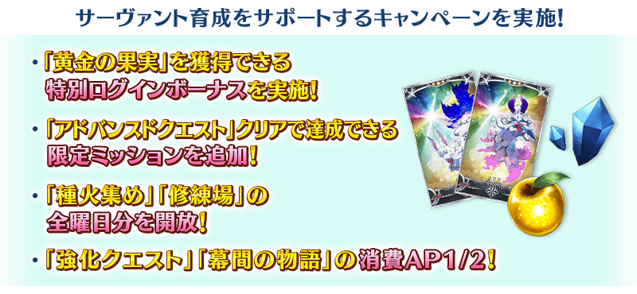
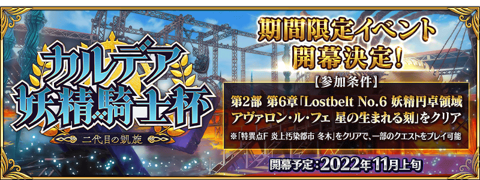

配合預定在2022年11月下旬開幕的期間限定活動「迦勒底妖精騎士杯 ～第二代的凱旋～」，舉辦『「迦勒底妖精騎士杯 ～第二代的凱旋～」開幕前夕宣傳活動』！
◆宣傳活動舉辦期間◆
2022年11月2日(三) 17:00～11月9日(三) 11:59
※本頁面皆為開發中圖片。會有與實際圖片相異的情況。
◆活動開幕預定◆
2022年11月上旬
◆活動參加條件◆
・通過第2部 第6章「Lostbelt No.6 妖精圓卓領域 阿瓦隆・勒菲 星辰誕生之刻」
※不需要通過亞種特異點(從Ⅰ到Ⅳ)。
※本活動的參加條件為通過第2部 第6章「Lostbelt No.6 妖精圓卓領域 阿瓦隆・勒菲 星辰誕生之刻」，通過「特異點F 炎上汙染都市 冬木」後，變得能遊玩活動主線關卡以外的關卡。
※未通過第2部 第6章「Lostbelt No.6 妖精圓卓領域 阿瓦隆・勒菲 星辰誕生之刻」的情況，無法遊玩本活動的主線關卡，敬請注意。

為了記念「迦勒底妖精騎士杯 ～第二代的凱旋～」的開幕，實施特別登入獎勵。
在下述的期間中登入7次(1天算1次)的話，贈送最多黃金果實7個！
◆舉辦期間◆
2022年11月3日(四) 3:00～11月10日(四) 2:59
※在舉辦期間內合計登入7天的話，可領取所有的登入獎勵。
◆贈送對象◆
2022年11月9日(三) 2:59前通過「特異點F 炎上汙染都市 冬木」的御主對象
※上述時間前，在管理室(ターミナル)畫面的關卡橫幅必須要有「CLEAR」的文字顯示。
◆登入獎勵內容◆
| 登入次數 | 贈送內容 | |
|---|---|---|
| 第1次 |

|
黃金果實 1個 |
| 第2次 |
|
黃金果實 1個 |
| 第3次 |
|
黃金果實 1個 |
| 第4次 |
|
黃金果實 1個 |
| 第5次 |
|
黃金果實 1個 |
| 第6次 |
|
黃金果實 1個 |
| 第7次 |
|
黃金果實 1個 |
※登入獎勵會在每天3:00配發。 ※合計7天內能領取，但根據成為贈送對象的時間點，可能無法到此上限。

下述的期間中，在「御主任務」的「限定」標籤內以期間限定追加『「進階關卡」通過任務』。
通過所有任務的話，可得到英靈結晶・星之芙芙ALL★3(HP)5張、英靈結晶・太陽之芙芙ALL★3(ATK)5張、300萬QP！
◆舉辦期間◆
2022年11月2日(三) 17:00～11月9日(三) 11:59
◆領取期間◆
2022年11月2日(三) 17:00～11月16日(三) 11:59
◆追加任務◆
| 任務名稱 | 任務達成報酬 | |
|---|---|---|
| 通過1次任意的進階關卡 |

|
英靈結晶・星之芙芙 ALL★3(HP) 5張 |
| 通過2次任意的進階關卡 |

|
英靈結晶・太陽之芙芙 ALL★3(ATK) 5張 |
| 通過3次任意的進階關卡 |

|
300萬QP |
※請注意舉辦期間與領取期間有所差異。 ※請注意與每週日23:00更新的普通任務(Weekly)不同欄位，超過領取期間的話無法入手報酬。 ※就算達成『「進階關卡」通過任務』，也不會計算在普通任務(Weekly)的任務進行度。 ※據主線故事的進行度會有無法達成『「進階關卡」通過任務』的情況。 ※已經通過的「進階關卡」就算再次通過也可達成任務。
在迦勒底之門內以分天出現的關卡「蒐集種火」與「修練場」全種類開放。
◆舉辦期間◆
2022年11月2日(三) 17:00～11月9日(三) 11:59
◆對象關卡◆
・所有的「蒐集種火」的關卡
・所有的「修練場」的關卡
※以期間限定出現的「蒐集種火」及「修練場」會繼承「關卡情報」到平常每天輪流出現的「蒐集種火」及「修練場」關卡。 ※每日關卡的詳細如下。
【每日關卡一覧】
| 關卡名 | 可做為戰利品獲得 的主要道具 |
攻略推薦 職階 |
|---|---|---|
| 【迦勒底妖精騎士杯開幕前夕】 每日交替 蒐集種火<殺・槍篇> |
Assassin、Lancer、Berserker的經驗值卡 |   |
| 【迦勒底妖精騎士杯開幕前夕】 每日交替 蒐集種火<騎・劍篇> |
Rider、Saber、Berserker的經驗值卡 |   |
| 【迦勒底妖精騎士杯開幕前夕】 每日交替 蒐集種火<術・弓篇> |
Caster、Archer、Berserker的經驗值卡 |   |
| 【迦勒底妖精騎士杯開幕前夕】 每日交替 蒐集種火<槍・殺篇> |
Lancer、Assassin、Berserker的經驗值卡 | |
| 【迦勒底妖精騎士杯開幕前夕】 每日交替 蒐集種火<劍・騎篇> |
Saber、Rider、Berserker的經驗值卡 | |
| 【迦勒底妖精騎士杯開幕前夕】 每日交替 蒐集種火<弓・術篇> |
Archer、Caster、Berserker的經驗值卡 | |
| 【迦勒底妖精騎士杯開幕前夕】 每日交替 蒐集種火<隨機篇> |
Saber、Archer、Lancer、Rider、Caster、Assassin、Berserker的經驗值卡(隨機) | - |
| 【迦勒底妖精騎士杯開幕前夕】 每日交替 弓之修練場 |
Archer的靈基再臨用道具、Archer的技能強化素材道具 |  |
| 【迦勒底妖精騎士杯開幕前夕】 每日交替 槍之修練場 |
Lancer的靈基再臨用道具、Lancer的技能強化素材道具 | |
| 【迦勒底妖精騎士杯開幕前夕】 每日交替 狂之修練場 |
Berserker的靈基再臨用道具、Berserker的技能強化素材道具 | ALL |
| 【迦勒底妖精騎士杯開幕前夕】 每日交替 騎之修練場 |
Rider的靈基再臨用道具、Rider的技能強化素材道具 |  |
| 【迦勒底妖精騎士杯開幕前夕】 每日交替 術之修練場 |
Caster的靈基再臨用道具、Caster的技能強化素材道具 | |
| 【迦勒底妖精騎士杯開幕前夕】 每日交替 殺之修練場 |
Assassin的靈基再臨用道具、Assassin的技能強化素材道具 | |
| 【迦勒底妖精騎士杯開幕前夕】 每日交替 劍之修練場 |
Saber的靈基再臨用道具、Saber的技能強化素材道具 | |
※Berserker在所有的每日關卡皆為有效職階。
下述的期間中，所有從者的強化關卡消耗AP變成1/2！(就算在戰鬥中撤退的情況，也會是同様的消耗量)
藉此機會通過尚未通過的從者強化關卡吧！
◆舉辦期間◆
2022年11月2日(三) 17:00～11月9日(三) 11:59
◆對象關卡◆
所有的強化關卡
下述的期間中，所有從者的幕間物語消耗AP變成1/2！(就算在戰鬥中撤退的情況，也會是同様的消耗量) ※「靈基解放關卡」為消耗AP1/2的對象外。 藉此機會滿足開放條件，通過喜愛從者的幕間物語吧！
◆舉辦期間◆
2022年11月2日(三) 17:00～11月9日(三) 11:59
◆對象關卡◆
所有的幕間物語
其他還有，「迦勒底妖精騎士杯開幕前夕 摩根Pick Up召喚」以期間限定舉辦！
另外，期間限定活動「迦勒底妖精騎士杯 ～第二代的凱旋～」的情報も公開中！
關於詳情，請自下述橫幅確認。
■「迦勒底妖精騎士杯開幕前夕 摩根Pick Up召喚」詳細情報

■「迦勒底妖精騎士杯 ～第二代的凱旋～」詳細情報 